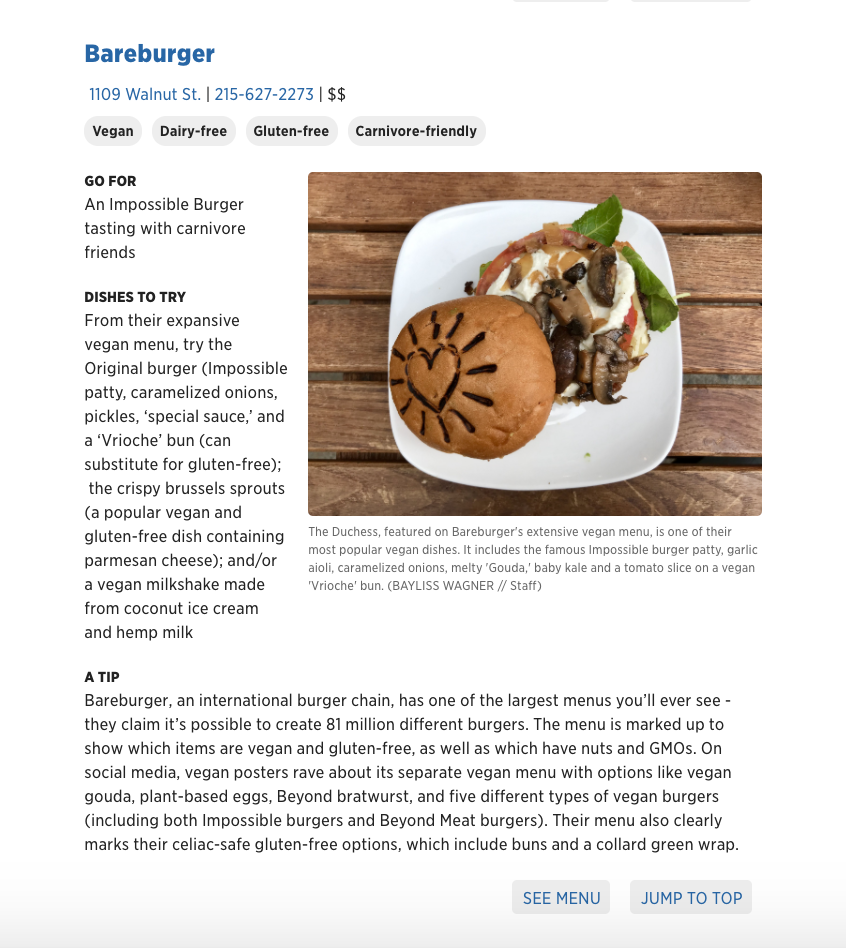
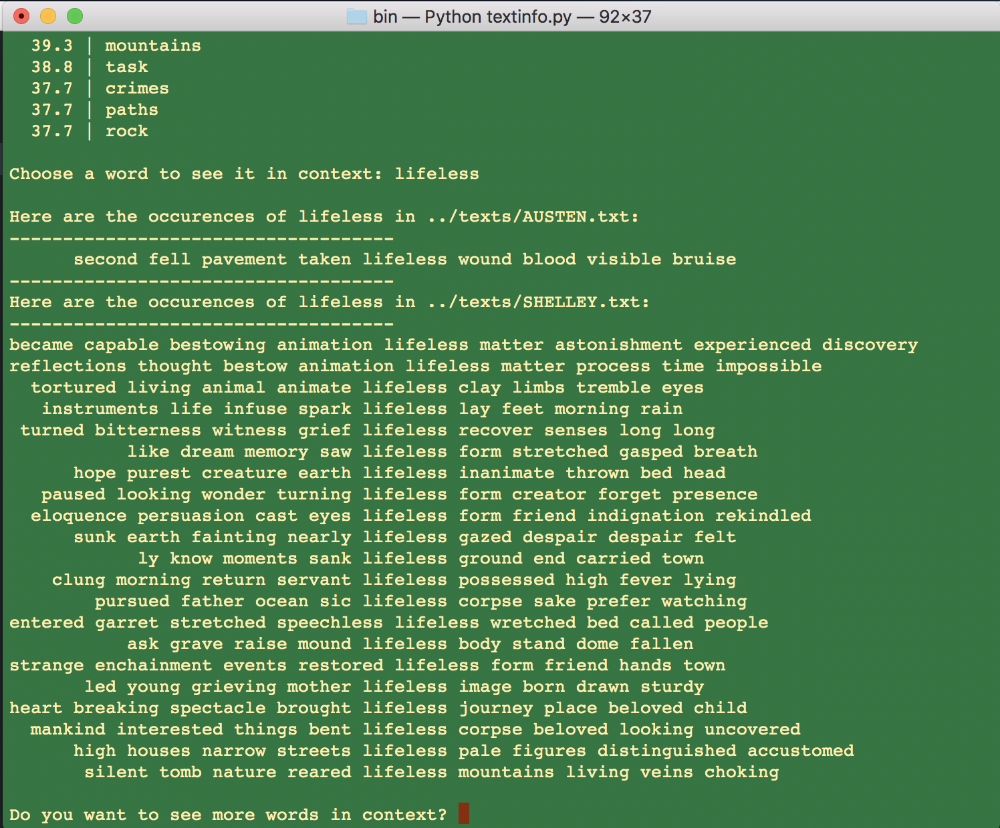
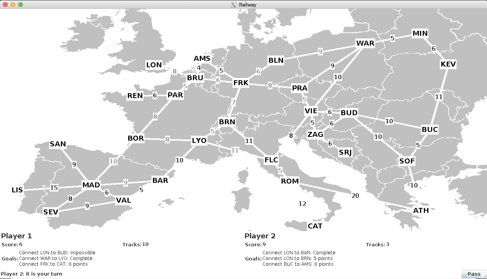

Coding Projects
Bayliss Wagner
Interactive Restaurant Guide (The Philadelphia Inquirer)Scheduled to be published later this year. See a live version here and the code on GitHub here. I pitched this project, a comprehensive, interactive guide to eating gluten-free and/or vegan in Philly. It allows users to browse around 25 restaurants by neighborhood and filter the list by dietary restriction. On the development side, I used Javascript, HTML, and CSS to designed and developed the mobile, tablet and web user interfaces. To streamline the large amount of copy and data we kept, I also created a backend for the project that connects Node.js to Google Drive documents. On the editorial side, I worked with another intern to research, vet, photograph and write the copy about the restaurants. Throughout every stage of this project I incorporated feedback from my editor on the guide’s design as well as feedback from the editor of the Food section, as well as feedback from user testing, I conducted with the team. The project has not yet been published, but the unpublished prototype can be found at this link. |
Live New Jersey & Delaware Beaches Map (The Philadelphia Inquirer)
This project brought together geographic, weather and water quality data in an interactive “Shore Guide.” It allows users to explore dozens of NJ and DE beaches and see in advance of a trip whether beaches are closed, open or under advisory and for what reasons. In addition, users can check the weather and get driving directions to each of these beaches, which are displayed on a map. For this project, I talked with state environmental control officials, lifeguards, and beach patrol directors to fact-check and find context for the data. This information went into the explanatory copy for the guide. I then used Python web-scraping and data-processing libraries to create a function that would scrape the data for Delaware beaches from its website and feed it into the web page, live, every hour, and input it cleanly into the existing framework for the project. I performed multiple phases of user testing to make sure the design was as user-friendly as possible and to ensure we caught all bugs before we launched the project. |
Novel Data ParserThis Python file, created for a Digital Humanities assignment (woohoo), takes single novels or a corpora of novels as input. The user can choose novels from these files and compare them. The program displays "most frequent words" in each novel and "most distinctive words" in each through comparison. The program also displays the "context" (surrounding words) of any word in the novel. (Ex: input "love" will display every use of the word "love" in the novel). I experimented with removing different stopwords when we returned to this program for my English class. Read my analysis of the program's results |
Ticket to Ride GameThis game, which resembles Catan, was designed to work with a GUI that our professor had designed. I worked with my partner to design main.cpp, railwayGame.h/railwayGame.cpp and player.h/player.cpp from scratch, and implement graphAlgorithms and adjacencyListUndirectedGraph-inl.h |